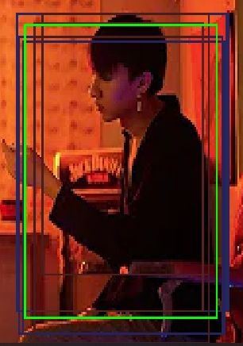
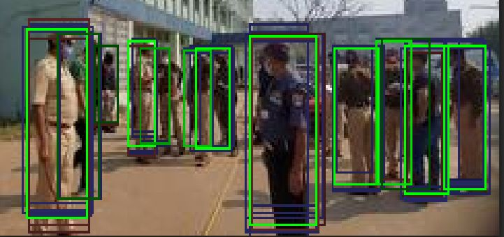

two classifiers are better than one
we can fuse detection boxes from different models ,eg. 2 different yolo detectors, or even SSD against a flipped version
(test time data augmentation)
wbf
nano
yolo4


also errors happen (joined 2 different persons):
in opencv/c++ it might look like this:
https://github.com/ZFTurbo/Weighted-Boxes-Fusion